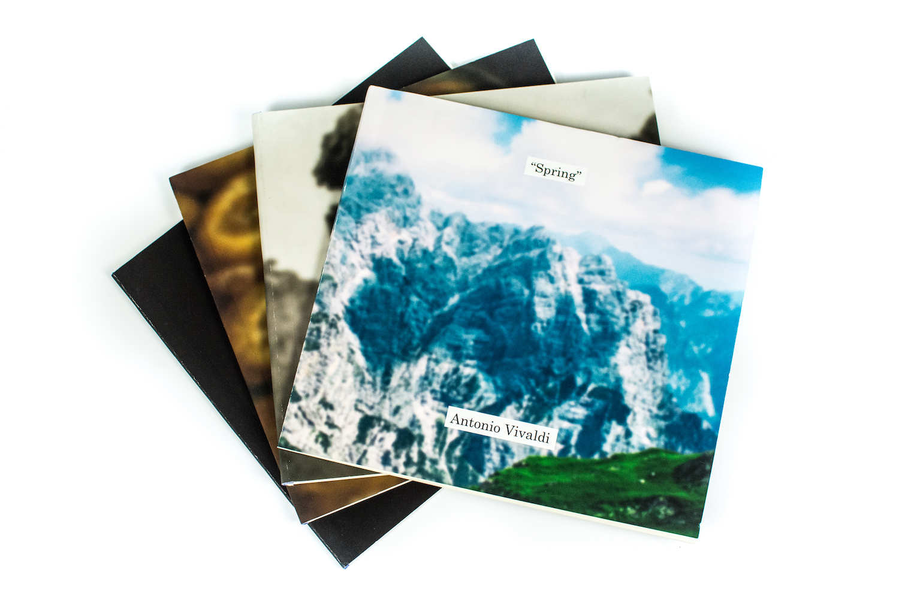
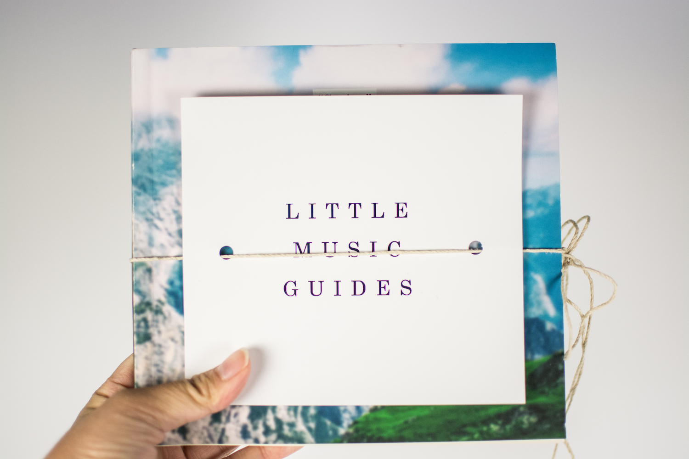
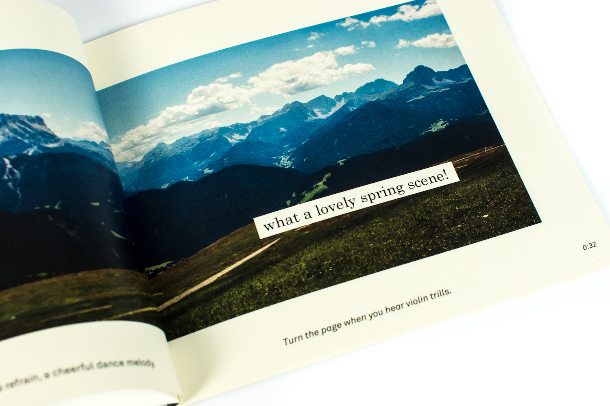
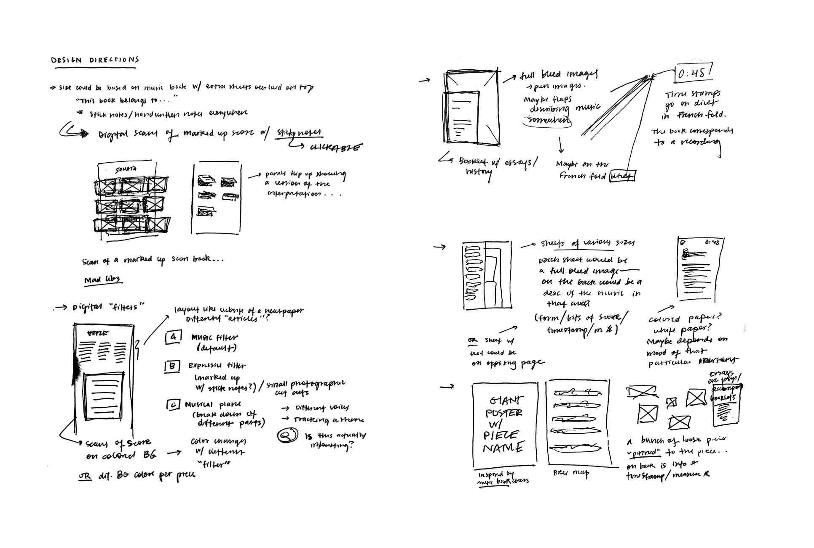
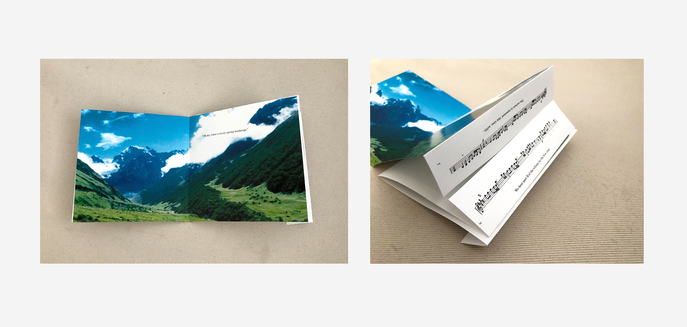
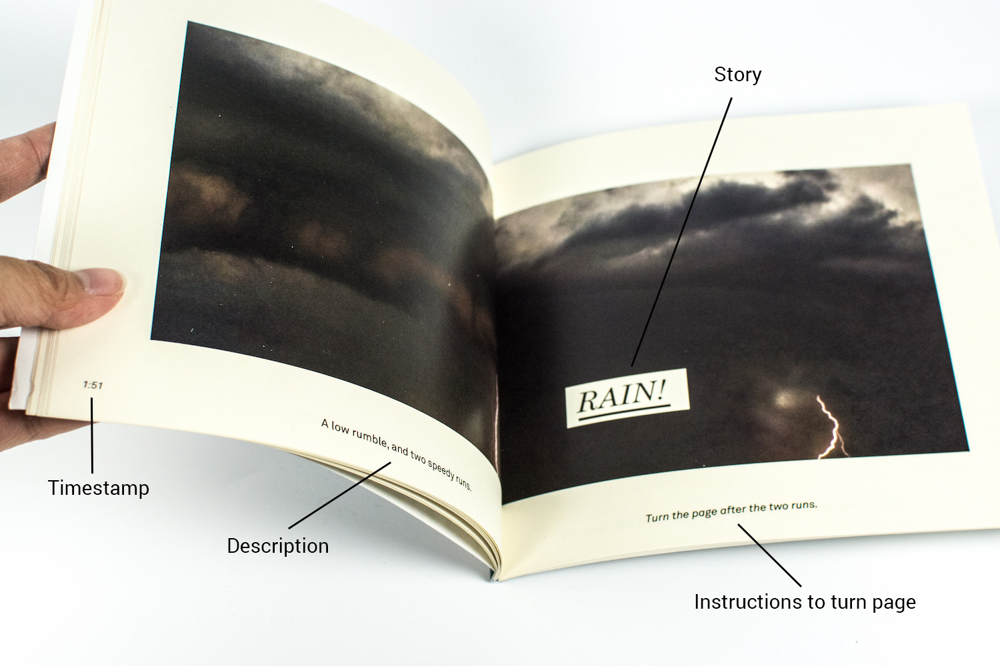
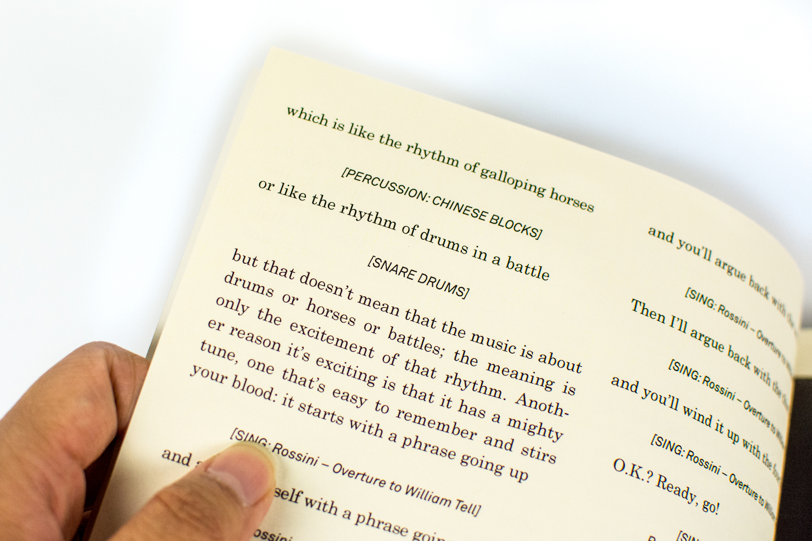
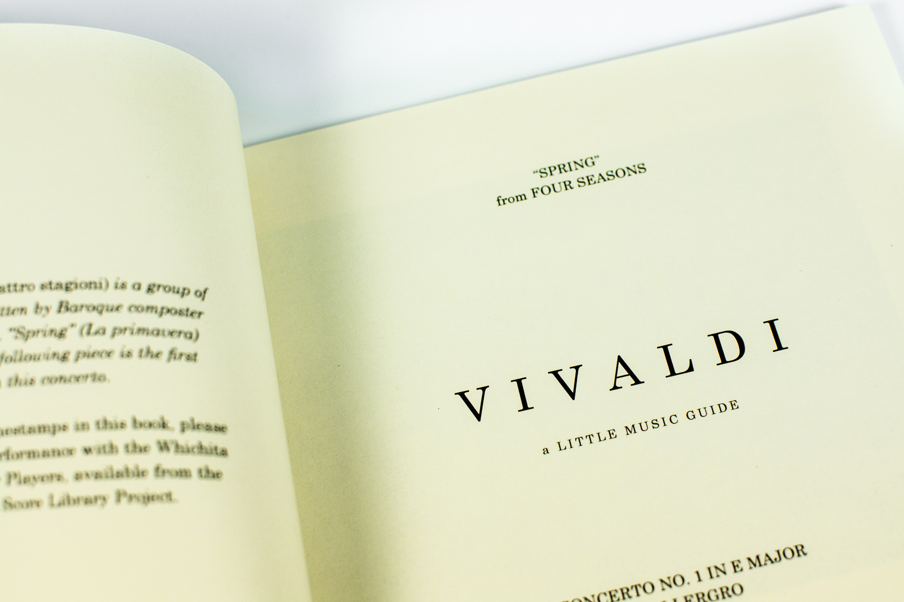
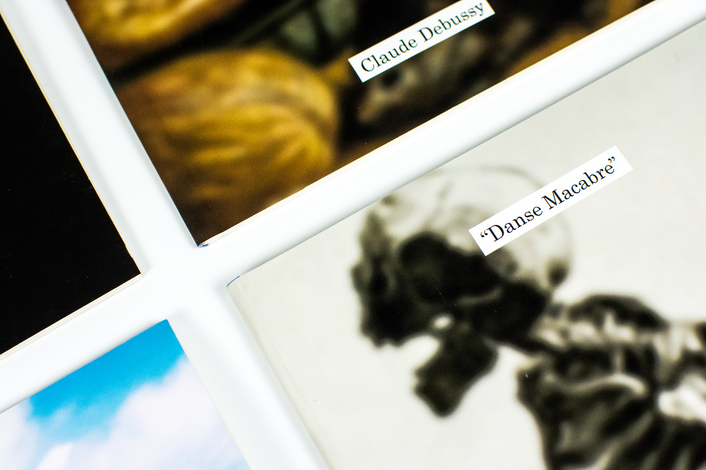
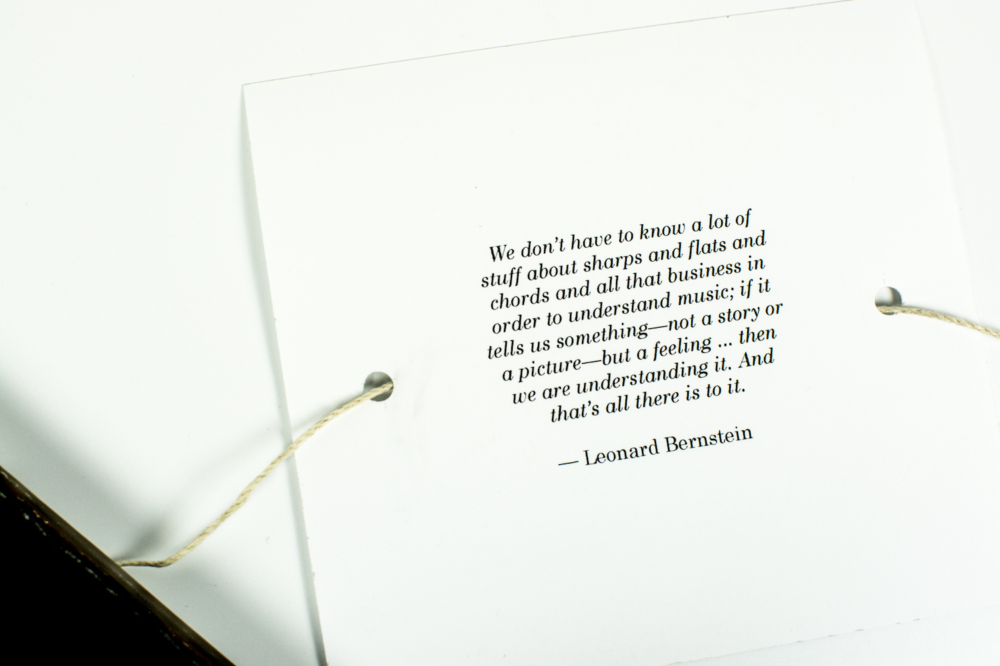

Minh-Anh Nguyen
Little Music Guides

Overview
Three lighthearted, real-time listening guides for three pieces of classical music, accompanied by a transcription of Leonard Bernstein’s Young People’s Concerts.
What I Did
Publication design, art direction, writing, user testing, production planning, book binding
What I Did
Publication design, art direction, writing, user testing, production planning, book binding
The three pieces I chose: the first movement from Vivaldi's "Spring" concerto, Passepied from Suite Bergamasque by Debussy, and Danse macabre by Saint-Saëns. The final black volume is a transcription of one of Leonard Bernstein's Young People's Concerts.
why
I played classical piano for over a decade, and despite spending hours each day for years on end finessing my repertoire for performances and competitions, it was hard for me to appreciate classical music as a listener. The music often seemed elusive and difficult to understand.
In college, I had the realization that enjoying classical music doesn’t require a vast knowledge of music theory or history; instead, it simply requires the open-mindedness to accept that you hear what you hear and to allow the sounds to be joyful to listen to.
I found this concept so far removed from the “classy” and “uptight” facade that classical music has. It seemed like a huge injustice for classical music to be branded as just “fancy”, “calming”, “background music.” My goal was to break down this stereotype of “classiness” that classical music comes with.

In college, I had the realization that enjoying classical music doesn’t require a vast knowledge of music theory or history; instead, it simply requires the open-mindedness to accept that you hear what you hear and to allow the sounds to be joyful to listen to.
I found this concept so far removed from the “classy” and “uptight” facade that classical music has. It seemed like a huge injustice for classical music to be branded as just “fancy”, “calming”, “background music.” My goal was to break down this stereotype of “classiness” that classical music comes with.
the first ideas
Many of my initial thoughts were inspired by writings from musicians and music critics. My first ideas focused on the idea that different people can approach a piece and take away totally different interpretations after they finish listening. The concepts I came up with involved many moving parts to service these complexities.
However, classmates that I talked to didn't find these concepts compelling. My ideas didn't address the basic experience that someone unfamiliar with classical music has; that the pieces are simply intimidating to listen to.
So then, I narrowed down the goals of my prototype: I wanted my readers to actively listen to the music, and I wanted to communicate that there isn’t one single valid way to interpret music.

However, classmates that I talked to didn't find these concepts compelling. My ideas didn't address the basic experience that someone unfamiliar with classical music has; that the pieces are simply intimidating to listen to.
So then, I narrowed down the goals of my prototype: I wanted my readers to actively listen to the music, and I wanted to communicate that there isn’t one single valid way to interpret music.
Preliminary ideation.
Prototyping
I went back to the drawing board and started thinking more deeply about how I might make the experience more accessible.
My first prototype was a picture book with a whimsical, preschool-friendly story that I wrote to match the piece; listeners could flip through the story and “follow along” as they listened to the piece. Each page had timestamps, brief descriptions of the music, and snippets of the score tucked between each spread via a modified French fold: this element would be the connection between the music and my made-up story.

My first prototype was a picture book with a whimsical, preschool-friendly story that I wrote to match the piece; listeners could flip through the story and “follow along” as they listened to the piece. Each page had timestamps, brief descriptions of the music, and snippets of the score tucked between each spread via a modified French fold: this element would be the connection between the music and my made-up story.
Physical mock-ups.
Those who tested my paper prototype found the picture book format fun, light-hearted, and accessible. At the same time, I also realized that the French fold technique was too cumbersome: readers often got lost between the description, the timestamps, the score, and the “storyline.” They often spent more time looking at the tiny flap between the pages, rather than soaking in the actual spreads.
With my notes from this prototype, I simplified the book and removed the French fold. Instead, all of the content was fit into a single page, then the typography adjusted to differentiate between the story and the musical information. After several more rounds of prototyping, I ended up with my final iteration.
With my notes from this prototype, I simplified the book and removed the French fold. Instead, all of the content was fit into a single page, then the typography adjusted to differentiate between the story and the musical information. After several more rounds of prototyping, I ended up with my final iteration.
The final product

In the final product, each page has these four elements.

I accompanied the series of three pieces with a transcription of one of Leonard Bernstein's Young People's Concerts—an iconic lecture series about finding joy in music.

The title page of the Vivaldi volume. The yellowed paper is reminiscent of music scores I grew up using.

I bound each volume by hand.
what i'm taking into future Work
Be critical in testing prototypes. There’s nothing like a user test to remind myself that novel ideas, like the French fold idea, are often worth letting go of.
Value craftsmanship. In the final stages of the project, I reveled in being able to craft the tactile experience of my project: I carefully planned the paper stock I would print on, the finish of the covers, and how the books would be packaged together (the twine & hole combination reminded me of a stringed instrument). Every decision and every detail can reinforce the experience of the piece.
Prioritize the impact on my audience as much as I prioritize “truth”. There are still many contingencies involved in the final product that the classical musician in me would quibble with—timestamps can vary wildly on a performance-to-performance basis, for one—but I had to let go of those complaints in favor of making sure that my listening guides were accessible to my audience. My goal of wanting readers to be able to experience music differently won out over my want for the project to paint the most precise picture of the “truth”.

Value craftsmanship. In the final stages of the project, I reveled in being able to craft the tactile experience of my project: I carefully planned the paper stock I would print on, the finish of the covers, and how the books would be packaged together (the twine & hole combination reminded me of a stringed instrument). Every decision and every detail can reinforce the experience of the piece.
Prioritize the impact on my audience as much as I prioritize “truth”. There are still many contingencies involved in the final product that the classical musician in me would quibble with—timestamps can vary wildly on a performance-to-performance basis, for one—but I had to let go of those complaints in favor of making sure that my listening guides were accessible to my audience. My goal of wanting readers to be able to experience music differently won out over my want for the project to paint the most precise picture of the “truth”.